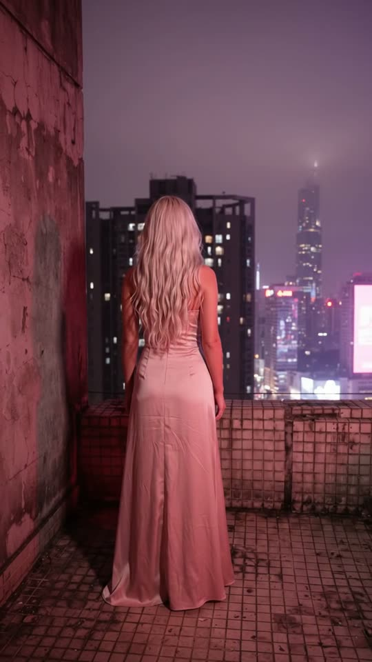
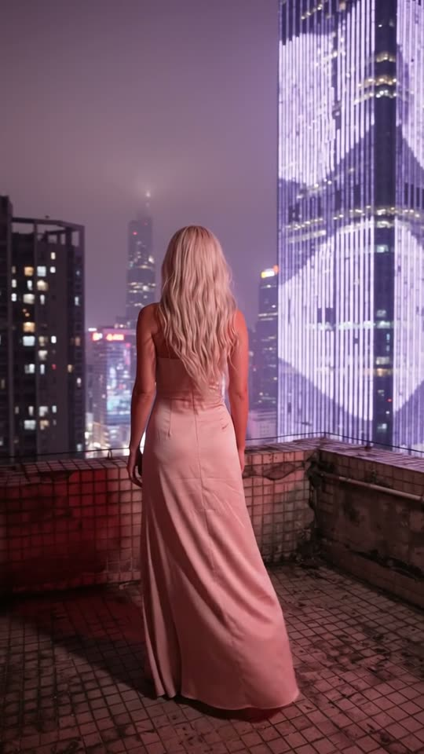
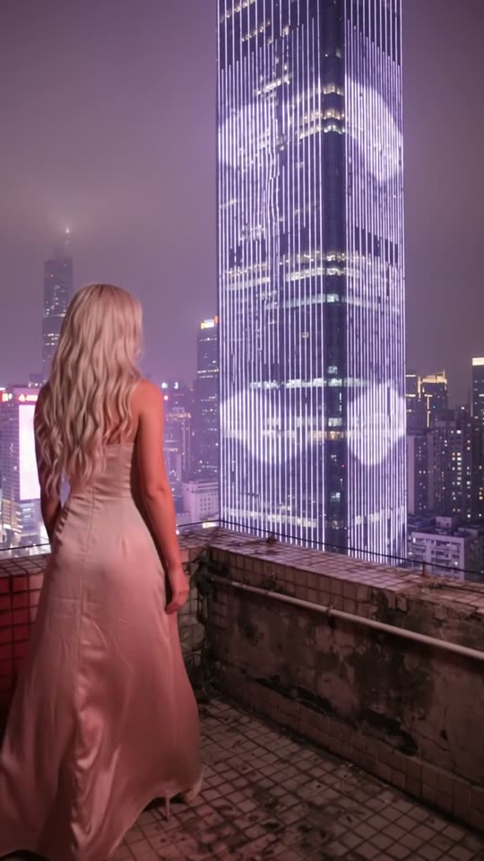
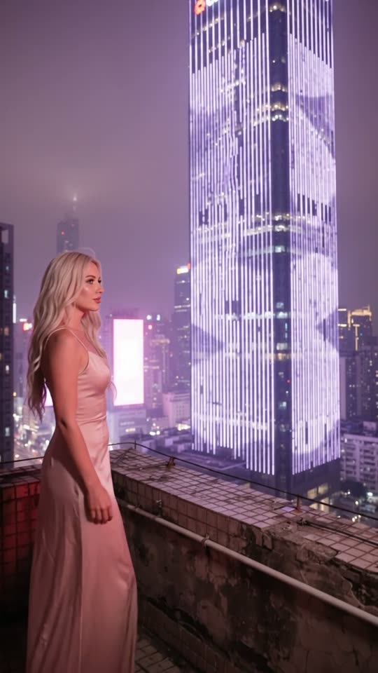

Free prompt pack
One rooftop.One neon city.
A woman in a satin gown stands above a megacity at night, and the camera arcs around her until a tower made entirely of light fills the frame. One still image and one prompt, in one take.
Both prompts, in the order I ran them. Plug each one in to light it up. Touch the wall of lights to make it ripple.
The first frame
Her back, the red light, the city. This image is frame one: the woman on an old tiled rooftop bathed in red-magenta light, and the purple megacity falling away beyond the wall.
Watch out
Write the signs as plain blocks of light. Real neon there is full of characters, and the model writes them back as nonsense.

The prompt 130 words
Real handheld night photo from just behind and to the left of a young woman standing on an old rooftop terrace high above a neon megacity like Chongqing. She has long voluminous wavy platinum-blonde hair falling down her back and wears a long fitted blush-pink satin gown that pools on the floor. The terrace floor is small square ceramic tiles, worn and grimy, with a rough concrete wall on the left, everything near her bathed in deep red-magenta light. Beyond the low parapet in front of her, the city falls away: dense skyscrapers glowing purple and magenta in a violet haze, a colossal tower whose whole façade is rows of white and lilac LED strips, tall glowing vertical neon panels, layers of lit rooftops far below. Real photo, night noise.
One arc
Ten seconds, one move, one tower of light. Add the image as the reference, set 10 s, 9:16, 720p and audio on, and paste the prompt whole. If it opens on your image and then jumps, trim those first frames.
- 0–1.5 sthe camera rises from the tiles
- 1.5–4.5 sthe arc to her right begins
- 4.5–8.0 sthe tower fills the right half
- 8.0–10 sher profile against the light
Watch out
Tell it the skyline is solid. My first try dissolved a whole building halfway through the arc, just to tidy up the background.
Fragments



The prompt 1252 words
FORMAT Real handheld night video, seen as the finished exported video file: the full picture edge to edge, nothing on top of it. Whatever records the picture is never in frame. One continuous take in real time, no cuts. Vertical frame. The video runs at 24 fps. No frame is repeated. Real time, 1x speed, never slow motion. SCENE On an old rooftop terrace high above a neon megacity at night, a woman in a long satin gown stands still beside the low parapet, looking out over the city. The camera rises from the red-lit tiles behind her and then slowly arcs around to her right, revealing a colossal skyscraper whose whole façade is covered in rows of glowing LED strips rippling with light. It ends on her profile at the left edge of the frame and the tower filling the right. She is already standing there in the first frame. REFERENCE IMAGE Use it for the woman, her hair, her gown, the tiled terrace, the wall, the red-magenta light and the city. She matches it exactly, zero drift, no smoothing. The camera move is described below. THE WOMAN One real young woman: long voluminous wavy platinum-blonde hair down to the middle of her back, a long fitted blush-pink satin gown with long sleeves that pools on the tiles, the satin catching the red-magenta light in soft highlights. She stands completely still beside the parapet, her weight on both feet, her feet never moving; only her hair and the hem of the gown stir in the wind. At 6 s she turns her head slightly to her right toward the tower, showing her profile. She never turns around, never looks at the camera, never leans over the parapet. THE CITY A dense hillside megacity like Chongqing, seen from high above at night: skyscrapers with magenta and purple window grids rising out of a violet haze, tall vertical neon panels glowing pink and white, layers of lit rooftops and tiny moving car lights far below. The hero is one colossal tower about 400 m away whose entire façade is vertical columns of short white-lilac LED strips; slow waves of brighter light ripple up and down its face. The neon panels are abstract blocks of light with no characters on them, and the tops of the towers are plain, with no signs or logos. The skyline is fixed and solid: every building keeps its shape, its height and its lit windows, and stays where it stands for the whole take. Buildings move across the frame only because the camera arcs, the nearer ones faster than the far ones, and they leave the frame only by sliding out past its edge. No building ever fades, dissolves, turns see-through, appears or vanishes; the dark residential high-rises with rows of lit windows between her and the LED tower stay solid until they slide out at the left edge, and once out they never come back. LOCATION MAP The camera starts 1.5 m behind the woman's left shoulder, at chest height. Frame-left: a rough concrete wall at the corner of the terrace. In front of her, at knee height, the low parapet runs across the frame; beyond it, the city. The colossal LED tower stands beyond the parapet to her right, at frame-right. The terrace floor of small red-lit tiles fills the bottom of the frame. FIRST FRAME Already rising: the red-lit tiles fill the bottom 40% of the frame; the hem of her gown and her back up to her shoulders at x 30-55%, y 20-85%; the concrete wall at frame-left; the purple glow of the city and the lower parts of the towers across the top of the frame. Instant read: a woman in a gown on a rooftop above a neon city. No delayed reveal. CAMERA Handheld at chest height, smooth with a small natural sway. 0–1.5 s: it tilts up about 20 degrees from the tiles to her head and the skyline. 1.5–8.0 s: it arcs slowly around her to her right, keeping 1.5 m from her, about 60 degrees in total, at one steady speed and always in the same direction, so she slides steadily from the centre to the left edge of the frame and the colossal LED tower moves into the right half, top to bottom. 8.0–10 s: it holds. The arc never stops halfway, never reverses, never swings back to the left. It never cuts, never zooms, never passes in front of her face, never leaves the terrace, never looks down over the parapet, never jumps or speeds up. ACTION TIMING 0–1.5 s — The camera tilts up from the tiles: her gown and her hair rise into frame, then the skyline. 1.5–4.5 s — The arc to her right begins: the skyline slides steadily left behind her, the nearer dark high-rises sliding out at the left edge; the LED tower enters at frame-right, its rows of light rippling. 4.5–8.0 s — The arc continues: she reaches x 15-35%, the tower fills the right half of the frame from top to bottom; at 6 s she turns her head slightly toward it, her profile lit magenta; the wind lifts strands of her hair. 8.0–10 s — Hold: her profile at the left edge, the tower's façade rippling with slow waves of white light. Hold to the last frame. PHYSICS AND SCALE Real scale and parallax: the tower is about 300 m tall and 400 m away, so it moves slowly in the frame while the nearer rooftops below slide faster. She stays still; only her hair and the satin move with the wind. The city lights stay steady except for the slow waves on the LED façade and the tiny car lights far below. Nothing morphs: one woman, one wall, one parapet, one colossal tower, and every other building as solid at the end as at the start. NO FULL-FRAME EVENTS The LED façade never fills the whole frame with uniform light, and the haze never turns the frame white or purple all over: she, the parapet and the city stay visible in every frame. LIGHTING Night: deep red-magenta light on the terrace, the wall and her from a lamp out of frame at the left; the city glowing purple and magenta through the haze; the white-lilac light of the LED façade on her face when she turns. No other light. AUDIO No music, no score, no narration, no subtitles. Wind gusting at that height, the low hum of the city far below, distant traffic and a far-off horn, the faint electric buzz of the neon, the soft rustle of her satin gown. No words. LOOK Real handheld night footage, seen as the finished exported file: the saturated magenta and purple come from the real neon, digital night noise, slight softness, natural highlights, no added colour grade, no film grain, no lens flare, no slow motion. No camera app interface: no shutter button, no gallery thumbnail, no record button, no icons, no timer, no recording dot, no frame lines. POSITIVE LOCKS One woman, standing still, never facing the camera. Every building stays solid and in place; nothing in the city fades or vanishes. No holograms, no flying cars, no drones, no rain, no fireworks. No letters, no characters, no numbers, no logos anywhere in the city or on the signs; no captions, no subtitles, no on-screen text, no watermark, nothing on top of the picture. ONE WOMAN. ONE TOWER. ONE MOVE. NO CUTS. NO INTERFACE. NO SLOW MOTION. NO MUSIC.
Rule 01
The camera moves, she doesn't
One big thing per clip. Here it's the arc, so she stands still: weight on both feet, only her hair moving in the wind.
Rule 02
One direction only
One steady arc that never stops, never reverses. When the camera wanders back, the model rebuilds the city and loses buildings.
Rule 03
Beside the wall, not on the edge
A woman on the edge of a roof reads as something else. Put her beside a low wall and never let the camera look down.
That's the whole build
Now go findyour own skyline.
If yours works, send it over. I read every DM and the good ones end up on the account.
@martiiifons